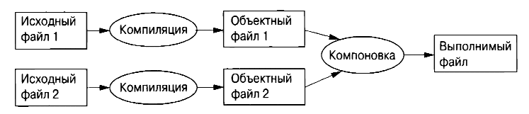

⇐1.1. Введение 1.2.1. Hello, World!⇒
С++ является компилируемым языком. Для работы программы ее исходный текст должен быть обработан с помощью компилятора, который создает объектные файлы, объединяемые компоновщиком в выполнимую программу. Обычно программы на языке С++ состоят из многих файлов с исходными текстами (обычно именуемыми просто исходными файлами).
Выполнимая программа создается для определенной комбинации аппаратного обеспечения и операционной системы; ее нельзя просто перенести, скажем, из компьютера Мае в компьютер с Windows. Говоря о переноси.мости программ С++, мы обычно имеем в виду переносимость исходного кода, т.е. исходный код может быть успешно скомпилирован и выполняться в разных системах.
Стандарт ISO С++ определяет два типа сущностей.
Компоненты стандартной библиотеки представляют собой совершенно обычный код С++, предоставляемый каждой реализацией языка. То есть стандартная библиотека С++ может быть реализована в самом С++ (и реализуется - с очень небольшим использованием машинного кода для таких вещей, как переключение контекста потока). Это означает, что С++ достаточно выразителен и эффективен для самых сложных задач системного программирования.
С++ является статически типизированным языком, т.е. тип каждой сущности (например, объекта, значения, имени или выражения) должен быть известен компилятору в точке использования. Тип объекта определяет набор применимых к нему операций.